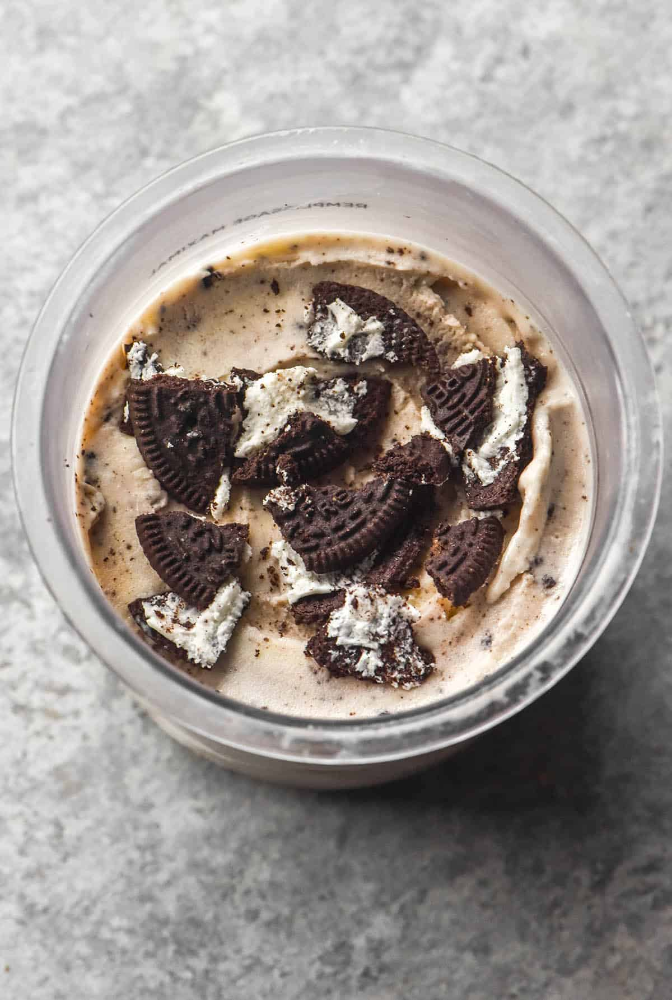

Ice Cap Protein Ice Cream

The BEST tasting ice cream ever.
This protein ice cream simply tastes amazing. It tastes very similar to Tim Hortans's ice cap. The fact that it's also healthy is insane. As seen in the image above, you can also add oreo cookies to it making it cookies and cream ice cap protein!
This meal is best enjoyed while watching your favorite TV show. Enjoy your guilt free ice cream experience.
Ingreients
Steps:
- Put two scoops of protein powder into shaker bottle
- Fill shaker bottle to 500ml line with almond milk
- Put in xanthan gum and pinch of salt if you remember
- Shake the bottle throughly
- Put the mix into ninja creami tub and put in freezer overnight
- Take out frozen mix and put it under hot water until you hear the crackling sounds stop
- Let the tub sit for exactly ten minutes
- Open the tub and use a spoon heated up by hot water to smooth the surfice of the ice cream until it is flat. You will likely need to use a stabbing motion to make this process faster
- Put the tub into the ninja creami and run it on full for 5 minutes
- **If you can't afford the calories, ignore this step** Add 3 full orea cookies with and put it back in the ninja creami on the mix in option.
- Scoop ice cream into a medium size boal and enjoy ideally with a good TV show